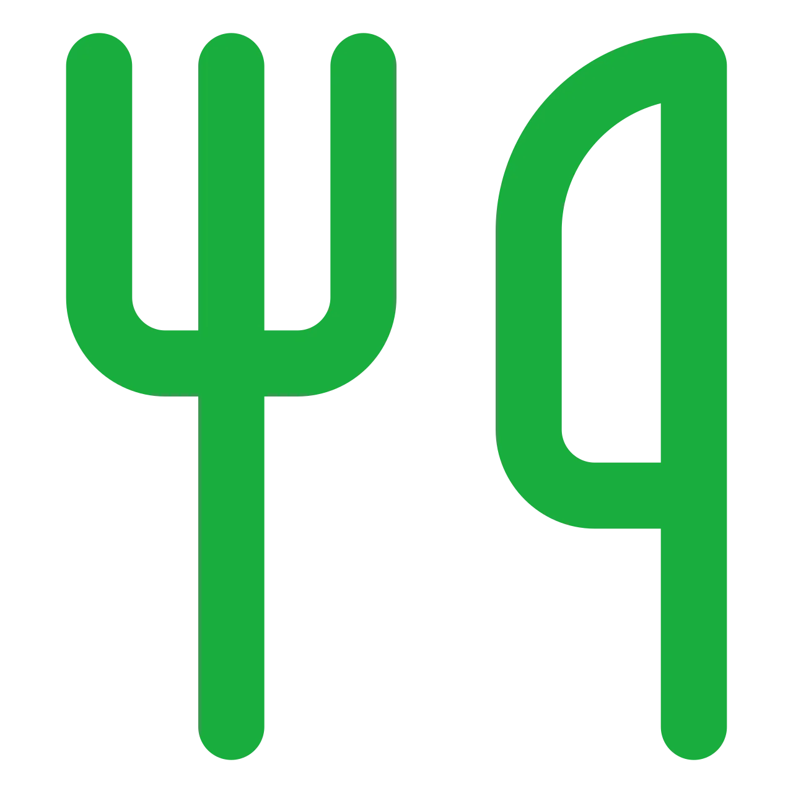
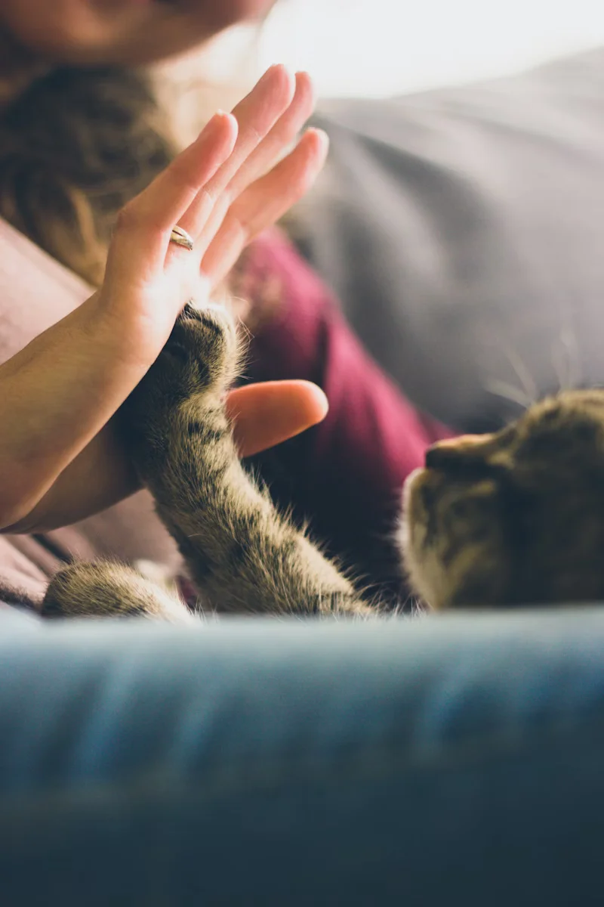

“Grâce aux dons, nous avons pu accueillir plus de 200 animaux cette année et leur offrir une seconde chance.”
Refuge des Quatre Pattes - LionProtégeons-les Ensemble
Chaque don compte pour leur offrir une vie meilleureFaites un don
10€
Permet de nourrir 5 animaux
pendant une journée
20€
Permet d’héberger un animal
sauvage pendant une nuit
50€
Permet de financer les soins
vétérinaires complets pour un animal
Notre Mission
Depuis 2010, Quatre Pattes œuvre sans relâche pour la protection et le bien-être des animaux en France. Notre mission est double : secourir les animaux en détresse et sensibiliser le public à la cause animale.
Chaque année, nous prenons en charge plus de 1000 animaux abandonnés, maltraités ou blessés. Grâce à notre réseau de familles d’accueil et nos partenariats avec des refuges, nous leur offrons une seconde chance.
Votre soutien est essentiel pour continuer notre mission. Ensemble, nous pouvons faire la différence pour ces êtres qui comptent sur nous.
Histoires de Réussite
Luna
Trouvée dans la rue avec une patte cassée, Luna a été soignée et a retrouvé sa joie de vivre. Elle coule maintenant des jours heureux dans sa nouvelle famille.
Janvier 2024
Luna
Oscar
Max
Testez Vos Connaissances
Les associations gardent la majorité des dons pour leurs fonctionnements
Vrai, les associations utilisent plus de 50% des dons pour leurs frais de fonctionnement
Faux !
Faux ! 85% des dons sont directement utilisés pour les animaux. Seuls 15% servent aux frais
de fonctionnement essentiels.
Les refuges ne prennent que des animaux en bonne santé
Vrai, ils refusent les animaux malades car c’est trop coûteux
Faux !
Faux ! Nous accueillons tous les animaux quel que soit leur état de santé. Chaque vie compte !
Les associations ont trop de moyens grâce aux dons
Vrai, elles reçoivent beaucoup d’argent des donateurs
Faux !
Faux ! Les besoins sont immenses et constants. Chaque don est précieux pour sauver les animaux.
Notre Impact
- 50+ Refuges
- Partenaires à travers la France
- 1000+ Animaux
- Sauvés chaque année
- 
- 10 000+ Repas
- Distribués par mois
Notre impact
-
-
“Le soutien de Quatre Pattes nous permet de maintenir notre mission de protection des animaux sauvages en détresse.”
Sanctuaire Animal - Marseille -
 “Chaque don compte et nous aide à offrir un avenir meilleur aux animaux abandonnées.”
Refuge du Soleil - Paris